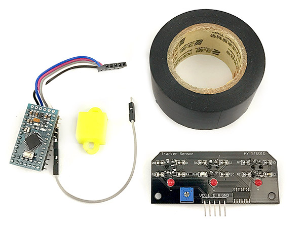
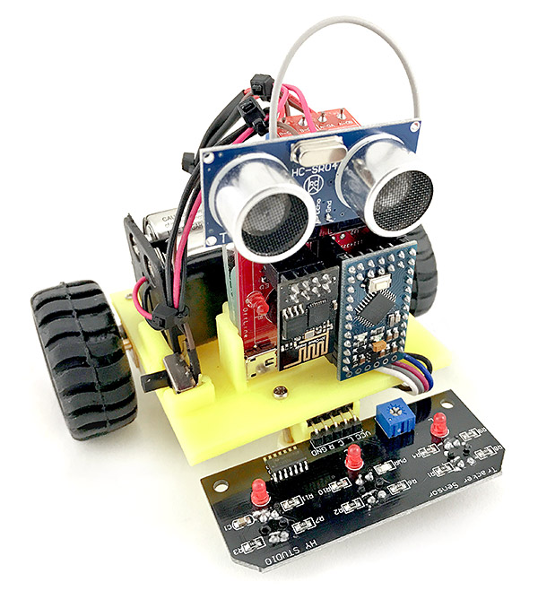

Webduino 自走車循跡升級套件 ( 材料包 )
Webduino 自走車循跡升級套件，透過簡單幾個步驟的升級改造，就可以讓您的 Webduino 自走車具備沿著路徑移動的能力，在移動的同時會紀錄軌跡，當自走車停止後，可以重新播放路徑移動。
( 注意！Webduino 循跡升級套件無法獨立運作，必須搭配 Webduino 公仔自走車使用！ )
售價：
產品內容：
- 1. 循跡控制板 ×1
- 2. Arduino Pro mini ×1 ( 已有循跡韌體與對應接線 )
- 3. 黑色膠帶 ×1 ( 作為軌道使用 )
- 4. 萬向輪支架 ( 3D 列印 ) ×1
產品照片

與自走車組裝照片 ( 教學：教學範例 37：循跡自走車 )

Webduino 循跡自走車 ( 循跡 + 路徑紀錄播放 )